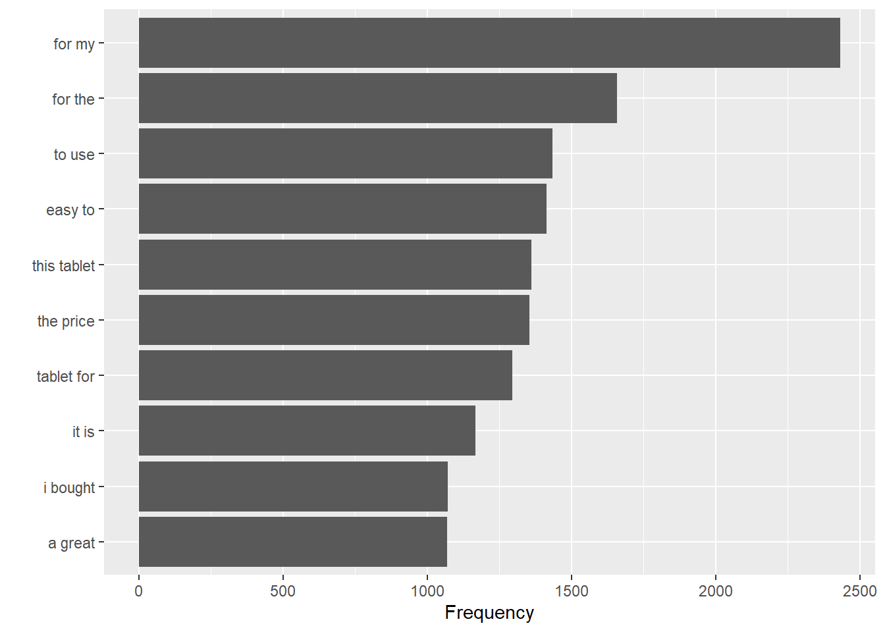

# A tibble: 75,462 × 2
bigram n
<chr> <int>
1 for my 2431
2 for the 1659
3 to use 1434
4 easy to 1413
5 this tablet 1360
6 the price 1355
7 tablet for 1296
8 it is 1166
9 i bought 1072
10 a great 1068
# ℹ 75,452 more rows
Top Most Frequent Paris
df_bigrams %>%count(bigram, sort =TRUE) %>%head(10) %>%ggplot(aes(x = n, y =reorder(bigram, n))) +geom_col() +labs(y ='', x ='Frequency')

Remove the stop words
Notice that there are many stopwords (for, to, a, an, the and so on) are in the pair of words. We will remove these words so that the pairs do not contain stopwords.
# A tibble: 37,691 × 3
word1 word2 n
<chr> <chr> <int>
1 easy to 1413
2 tablet for 1296
3 bought this 920
4 loves it 798
5 love it 562
6 tablet is 516
7 kindle fire 463
8 gift for 396
9 games and 298
10 purchased this 292
# ℹ 37,681 more rows
Top Most Frequent Pairs
bigram_counts$pairs =paste0(bigram_counts$word1, " ", bigram_counts$word2)bigram_counts %>%head(10) %>%ggplot(aes(x = n, y =reorder(pairs, n))) +geom_col() +labs(y ='', x ='Frequency')
# A tibble: 398 × 3
word1 word2 n
<chr> <chr> <int>
1 not a 129
2 not the 91
3 not as 90
4 not have 72
5 not be 45
6 not too 41
7 not very 39
8 not an 37
9 not so 36
10 not to 35
# ℹ 388 more rows
# A tibble: 80 × 3
word2 value n
<chr> <dbl> <int>
1 bad -3 25
2 like 2 25
3 great 3 22
4 recommend 2 18
5 good 3 16
6 want 1 13
7 super 3 9
8 worth 2 8
9 allow 1 6
10 disappoint -2 6
# ℹ 70 more rows
library(ggplot2)not_words %>%mutate(contribution = n * value) %>%arrange(desc(abs(contribution))) %>%head(20) %>%mutate(word2 =reorder(word2, contribution)) %>%ggplot(aes(n * value, word2, fill = n * value >0)) +geom_col(show.legend =FALSE) +labs(x ="Sentiment value * number of occurrences. These sentiment should be reversed",y ="Words preceded by \"not\"")
There are issues with the sentiment analysis approach that only counts the appearance of positive or negative words. One of the issues is that a word’s the sentiment may be reverse with word such as NOT.
For example, the words sentence I am not happy does not have a positive sentiment, but the word happy will indicate a positive sentiment.
We will address this issue using the pairs of words. We will first identify all the words that connect with not, no, never, without then reverse the sentiment values of the these words.